Digital Ocean - rejestracja i konfiguracja¶
DigitalOcean to platforma chmurowa, która umożliwia użytkownikom tworzenie i zarządzanie serwerami wirtualnymi (nazywanymi "dropletami"). Jest skierowana głównie do programistów i małych firm, oferując prostą i intuicyjną obsługę. Użytkownicy mogą uruchamiać na niej aplikacje, strony internetowe czy bazy danych, korzystając z elastycznych zasobów chmury. Dzięki temu można skalować infrastrukturę w zależności od potrzeb. DigitalOcean jest ceniona za przystępność, szybkie wdrożenia oraz transparentne modele kosztów.
Jak założyć konto w Digital Ocean?¶
-
Wejdź na stronę digitalocean.com przez link https://m.do.co/c/1d69c2e45097
Ważne
To ważne, aby użyć powyższego linku, żeby dostać darmowe kredyty
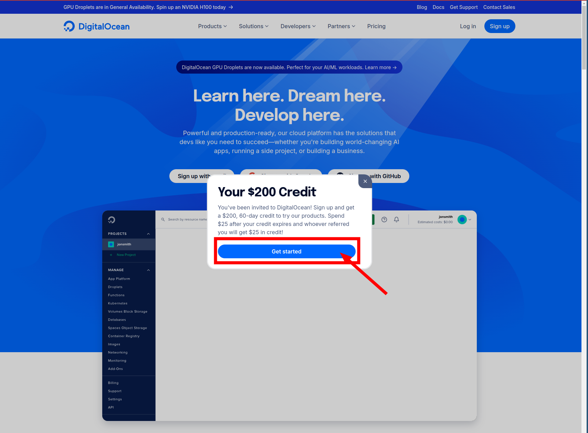
-
Wybierz
GitHubjako formę autoryzacji do Digital Ocean. Aby to zrobić kliknij Sign Up with GitHub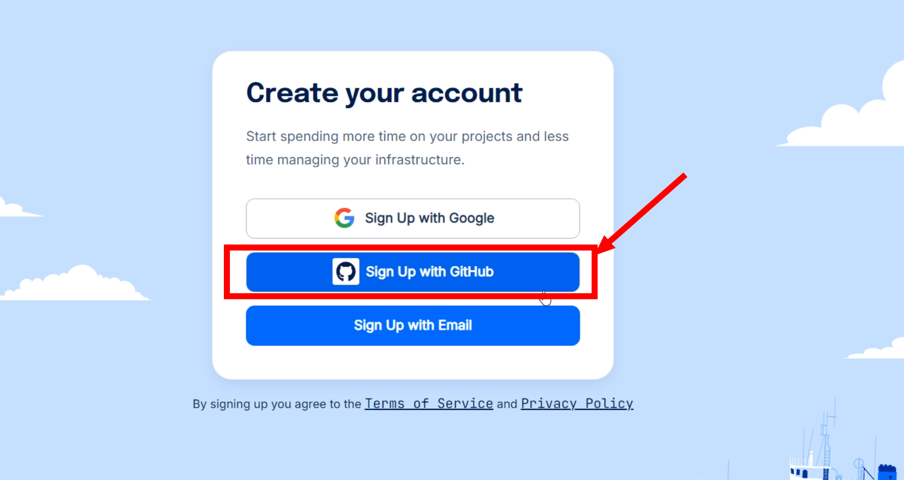
-
Autoryzuj Digital Ocean,aby mogło używać
GitHubżeby Cię logować. Aby to zrobić kliknij zielony guzik Authorize digitalocean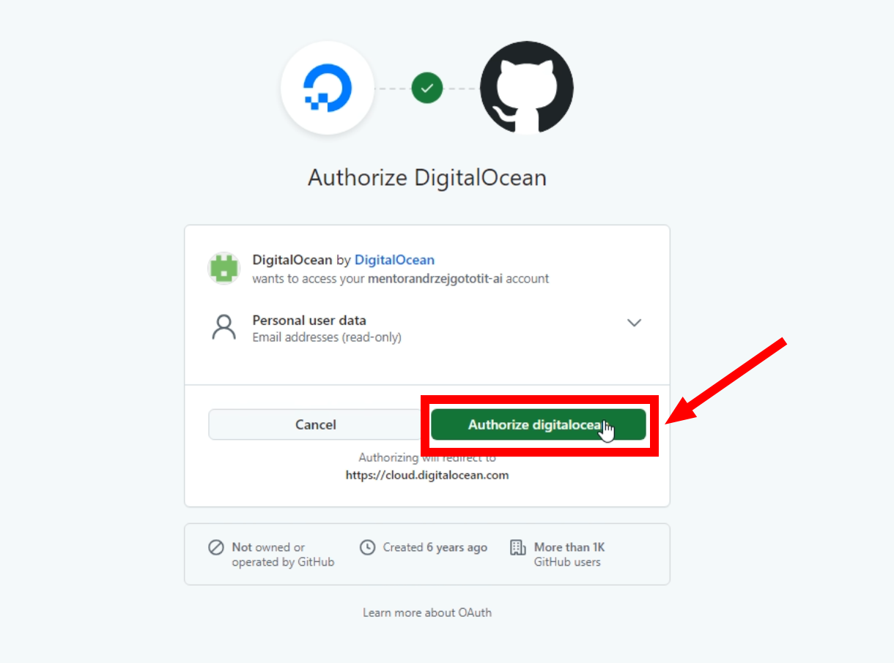
-
Wypełnij ankietę. Najlepiej w taki sposób, jak zaprezentowano na poniższym zrzucie ekranu, a następnie kliknij Submit
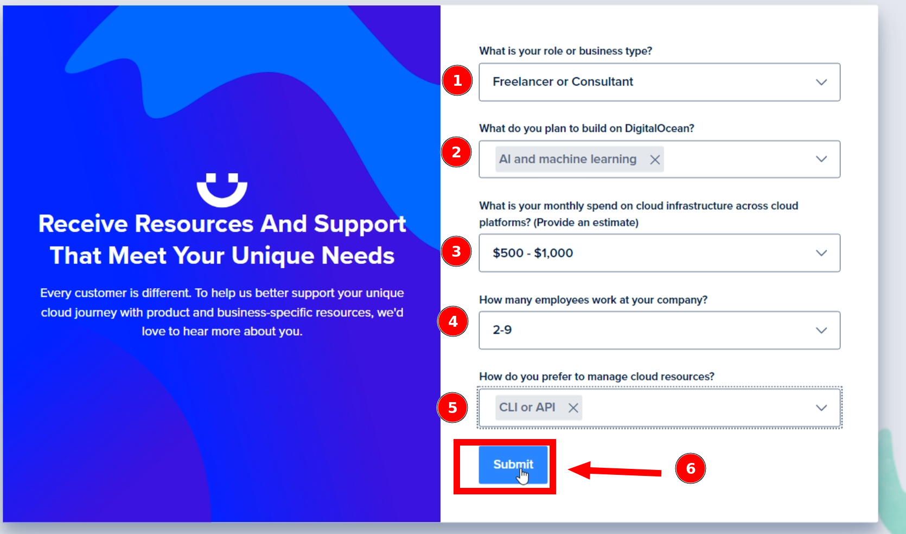
-
Mimo, że otrzymujemy od Digital Ocean darmowe 100$, żeby się pobawić ich chmurą, musimy podpiąć kartę. Wypełnij dane karty i kliknij Save and Sign Up
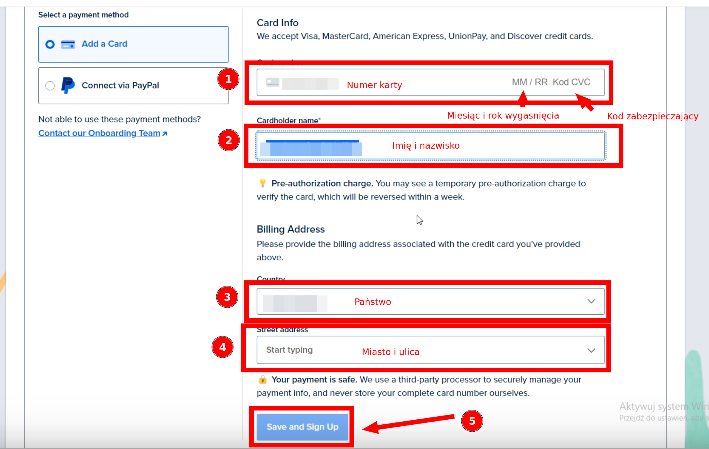
-
Jeśli po weryfikacji zobaczymy ekran powitalny, to oznacza, że wszystko poszło w porządku. W celu przejścia do konsoli Digital Ocean, należy wcisnąć przycisk Explore our Control Panel
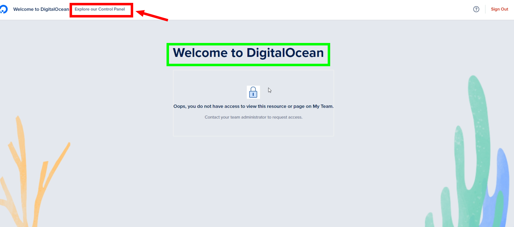
-
Ekran konsoli Digital Ocean
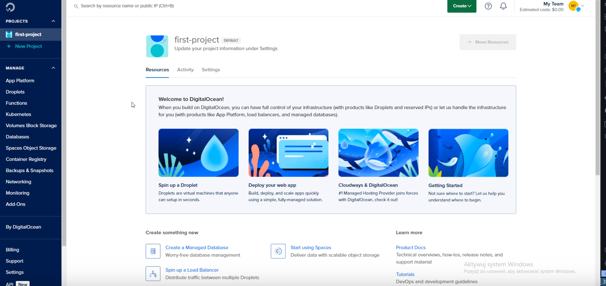
Jak się zalogować do Digital Ocean?¶
-
Wejdź na stronę logowania https://cloud.digitalocean.com/login
-
Tutaj istnieją 2 możliwości:
- Jeśli przeglądarka pamięta jeszcze ostatnią sesję, to zobaczysz ekran, na którym możesz potwierdzić, że chcesz wrócić do tej sesji. W tym scenariuszu kliknij w guzik Sign In with GitHub
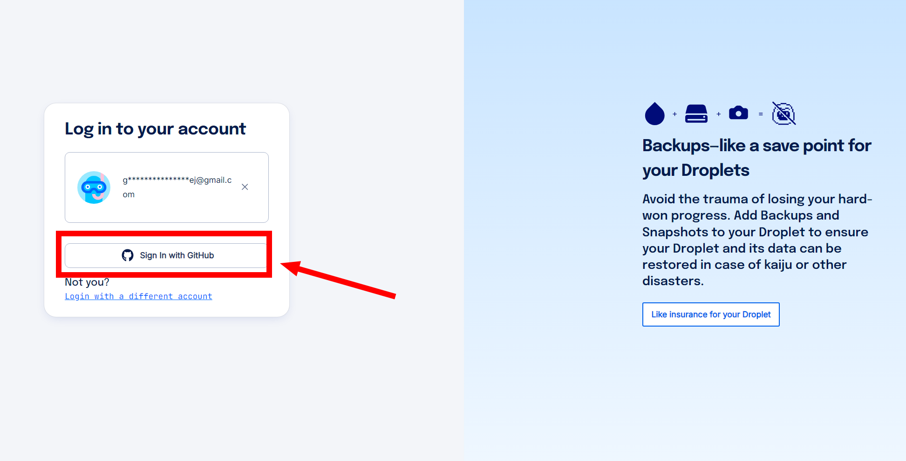
- Jeśli Twoja poprzednia sesja nie jest zapisana, wówczas wybierz ten sam sposób logowania, ten sam który został wybrany przy rejestracji.
Moim wyborem podczas prowadzenia lekcji był
GitHub. Jeśli był to również Twój wybór, to kliknij Sign In with GitHub
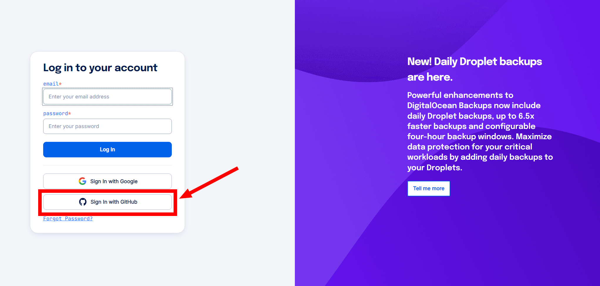
Jak usunąć konto Digital Ocean?¶
- Zaloguj się do konsoli Digital Ocean, tak jak w instrukcji wyżej.
-
Kliknij w swój awatar, znajdujący się w prawym górnym rogu konsoli
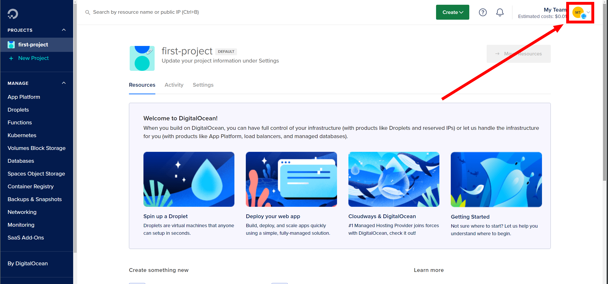
-
Następnie z menu wybierz My Account
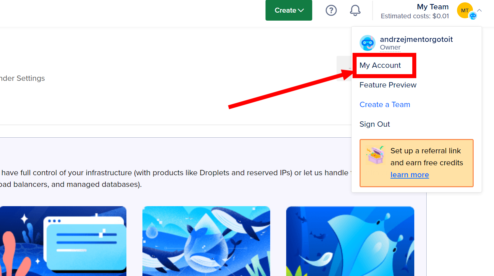
-
Nawiguj na dół strony i kliknij guzik Deactivate znajdujący się w prawym dolnym rogu
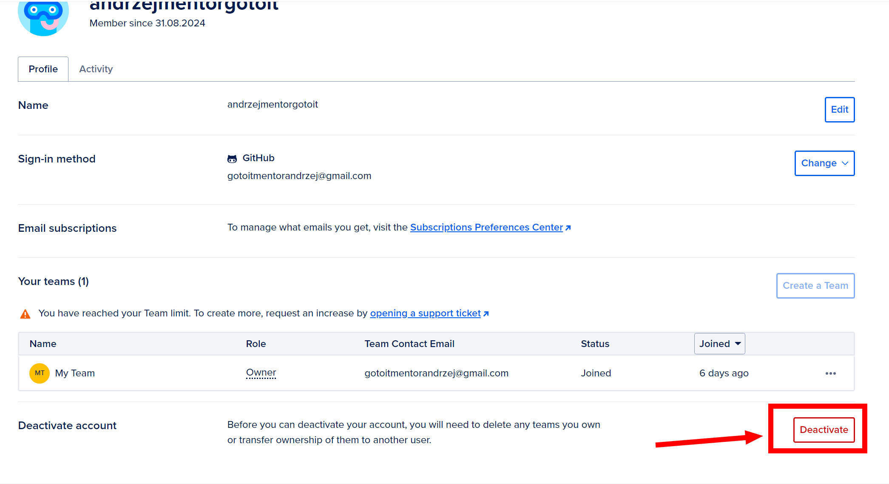
-
Następnie, na kolejnym ekranie zaznacz Purge my account data i potwierdź usunięcie klikając przycisk Delete Account and Purge Data
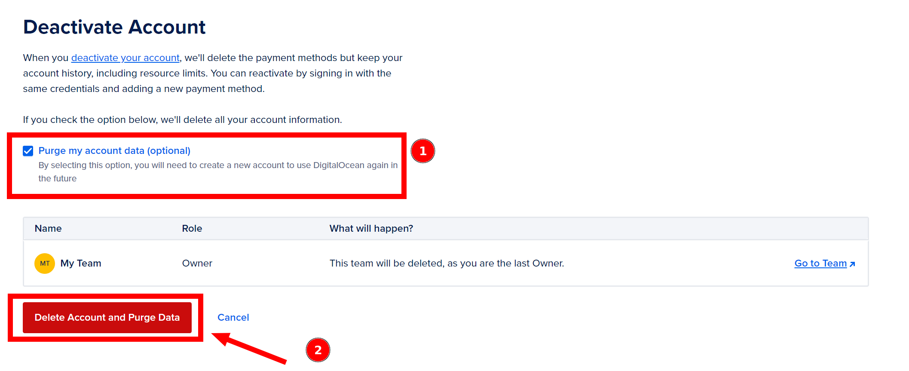